1) Skills
각 특성은 10단계가지 있다.
스킬 슬롯은 총 5개, MARINA에서만 설정 가능하다.
운 (LUCK)
행운 스킬 포인트를 투자하면 희귀/에픽 등급의 물고기, 생물, 몬스터를 낚을 확률이 높아집니다.
- Lv2 큰 개체 출현 확률 증가
- Lv5
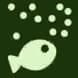
미끼의 유인 확률 증가 - Lv6
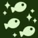
희귀/에픽 확률 증가 - Lv7
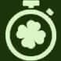
클로버 효과 지속시간 2배 - Lv8 정말 멋진 대형 어종 확률 증가
힘 (Strength)
힘 스탯에 포인트를 더 투자하면 움직이는 "완벽한 낚싯줄" 영역의 속도가 약간 느려져 물고기를 더 빠르게 낚아 올릴 수 있습니다.
- Lv2
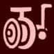
일반 어종 릴링 속도 증가 - Lv3 캐스팅 속도 증가
- Lv4
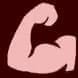
격력한 싸움시 릴링 속도 증가 - Lv5
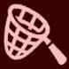
10% 확률로 전투 없이 희귀 어종 획득 - Lv6 라인 내구/저항 증가
반사 (Reflex)
반사(민첩성)은 감각을 예리하게 하여 물고기가 입질할 때 더 빠르게 반응하고 물고기를 잡을 확률을 높여줍니다.
- Lv2 찌 반응 입력 여유 시간 증가
- Lv3 낚시대 내구성 증가
- Lv4 강한 개체 전투 난이도 완화
- Lv5
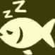
물고기 피로 누적 속도 증가 - Lv6 이동 속도 증가
지각 (Perception)
"물고기를 더 쉽게 찾을 수 있도록 도와줍니다."
- Lv2 물고기 때 가시성 향상
- Lv3
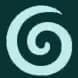
보트 주변 물고기 수 증가 - Lv4 야간 시야 향상
- Lv5 희귀/에픽 근처 사운드 힌트
- Lv6 희귀/에픽 그림자 구분
카리스마 (Carisma / Charisma)
카리스마(매력)은 잡은 물고기에 대해 더 나은 가격을 협상할 수 있도록 도와드립니다.
- Lv1
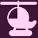
어디서나 VIP 이동 - Lv2 판매 보너스
- Lv4 NPC XP 보상 증가
- Lv6
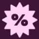
상점 가격 할인 - Lv8 생명체 포획 확률 증가
- Lv10
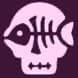
미끼 몬스터 소환 확률 증가